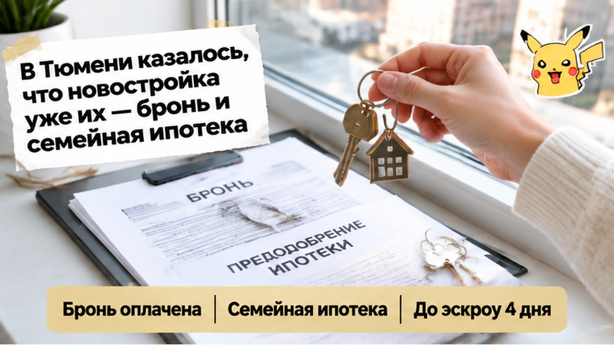
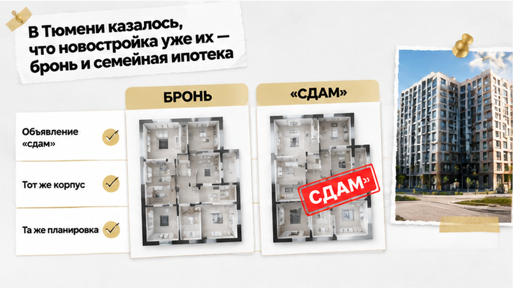
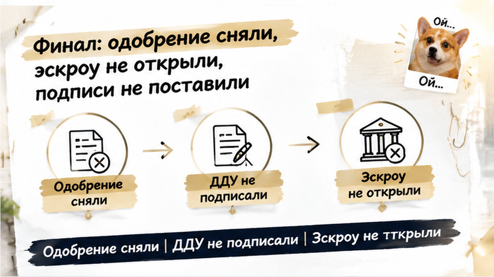
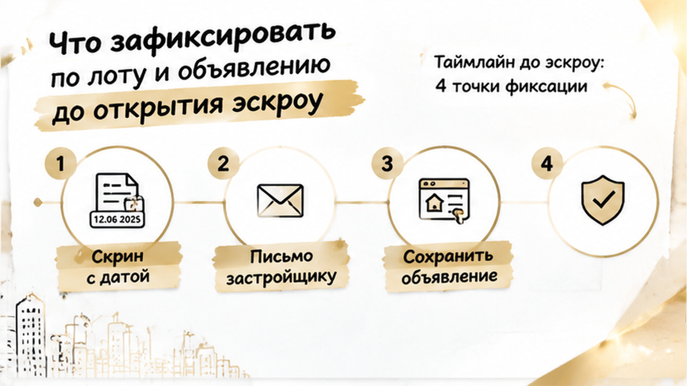
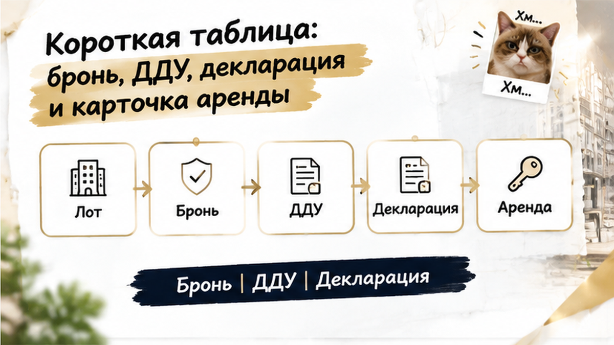

За четыре дня до открытия эскроу тюменская семья с детьми увидела на агрегаторе объявление «сдам»: тот же корпус, та же планировка, что у квартиры в их брони. Через несколько дней банк снял предварительное одобрение семейной ипотеки. Застройщик не обанкротился, ставка за ночь не выросла. Сломалась одна деталь, которую банк не мог оставить без объяснений. Эскроу не открыли, ДДУ и кредитный договор не подписали, деньги остались у семьи. Квартиру они не потеряли, но и купить её в тот раз не смогли.
Если вы сейчас между бронью и эскроу и что-то в документах или объявлениях не сходится, напишите нам до подписей: Telegram или MAX. Разберём ваш лот по бумагам, а не по ощущениям.

До того вечера всё шло по плану. Семья выбрала квартиру в строящемся доме, оплатила бронь и подала заявку на семейную ипотеку. Пришло предварительное одобрение. Оставалось открыть эскроу-счёт, подписать кредитный договор и ДДУ, а потом ждать регистрации. Дату в календаре на телефоне обвели, до неё было четыре дня.
На кухне уже не спорили, брать или не брать. Говорили о другом: где будет детская, как возить старшего в школу из нового района, какую стену покрасить первой. Ощущение на этом этапе у всех одинаковое: банк сказал «да», значит, дальше одни формальности. С этим ощущением многие покупатели в Тюмени доходят до самого офиса банка.
Фон в те дни был нервный. Местные медиа писали, что перед изменениями семейной программы с 1 октября банки пересматривают одобрения. Семья это читала и немного переживала. Только их сделку сломали не новые правила, а одно объявление.

Поздно вечером, когда дети уже спали, жена листала агрегатор. Ничего конкретного не искала, просто по привычке смотрела цены в своём районе. Среди объявлений об аренде попалась карточка: тот же корпус, та же планировка, похожий этаж, почти тот же номер лота. В заголовке стояло «сдам».
Она молча развернула телефон к мужу. Первая мысль была самой страшной: квартиру уже кто-то сдаёт, значит, она занята или её продали дважды. Вторая пришла позже и была точнее: пока это только совпадение, а не доказательство. Объявление мог продублировать агент, мог перепутать номер, мог выложить квартиру из соседней секции. Прежде чем делать выводы, нужно было проверить.
Семья поступила так, как поступил бы любой аккуратный покупатель. Сохранили скриншот с датой, ссылку и текст объявления. Утром показали всё риелтору и решили сообщить банку, пока ничего не подписано. По закону это было правильное решение. По деньгам оно стало для этой сделки последним.
Похожий обрыв в последние дни мы уже разбирали, только причина там была другая: за два дня до эскроу в реквизитах счёта оказалось чужое юрлицо, и банк остановил сделку. Общее у этих историй одно. На финальной проверке банк реагирует на любое расхождение, которое заметил сам или о котором ему рассказали.
Скрин с датой и ссылкой ушёл менеджеру ещё ночью. Утром он перезвонил сам и попросил приехать обоих созаёмщиков, не только мужа. По телефону ничего объяснять не стал. Сказал одно: вопрос надо закрыть до выхода на сделку.
В офисе обошлось без драмы. Менеджер открыл заявку и показал статус: предварительное одобрение. Это решение про самих людей: доход, кредитная история, право на семейную программу. Финальная проверка смотрит уже на квартиру и на сделку: объект, проект ДДУ, застройщика и то, как выглядит вся покупка. Пока кредитный договор не подписан, банк должен учесть любую новую информацию. Сообщение, что похожий лот кто-то уже сдаёт, как раз такая информация.
Дальше он сказал вещь, которую семья запомнила. Никто не думает, что объявление повесили они сами. И никто не говорит, что квартиру по семейной ипотеке потом нельзя сдавать. Банку нужно было понять другое. Это тот же лот или соседний? Не продан ли он и не обещан ли кому-то ещё? Нет ли у сделки второго сценария, о котором банк не знает?
У семейной ипотеки на стройку жёсткие рамки. Договор заключается напрямую с застройщиком по ДДУ, а покупать по уступке с 01.07.2024 по программе нельзя. Плюс льготную квартиру нужно держать в собственности до погашения кредита. Поэтому любая мутность вокруг конкретной квартиры для банка значит одно: остановиться, а не закрыть глаза. Ровно об этом и пишет ДОМ.РФ: предодобрение не обещает выдачу, это приглашение на финальную проверку.
Тут и проходит граница, которую многие не видят. В статистику эскроу попадают те, кто дошёл до подписи. Наша семья сидела в офисе на шаг раньше, там, где сделку ещё можно развернуть. Мы уже разбирали похожий разрыв в истории, где семейную ипотеку на новостройку одобрили, а эскроу так и не открыли.
До эскроу осталось несколько дней, а в сделке что-то не сходится? Пришлите документы и скрины в Telegram или MAX. Разберём по шагам, что спросить у банка и застройщика до подписей.

Из банка вышли со списком вопросов. От застройщика нужно было письменно подтвердить, что лот из брони свободен и совпадает с проектом ДДУ: корпус, секция, этаж, номер. И объяснить, откуда на агрегаторе карточка с этой планировкой. Запрос в отдел продаж ушёл в тот же день, с тем же скрином и датой.
Потом считали дни. До эскроу три, потом два. Письменного ответа по конкретному лоту к назначенному дню так и не пришло. Банк тянуть не стал: предварительное одобрение сняли, выдачу отложили до разбора. На сделку никто не поехал.
Эскроу-счёт не открыли, ДДУ и кредитный договор не подписали, деньги остались у семьи. Вечером на кухне перечитывали договор бронирования: что будет с бронью, решают его пункты, а не настроение отдела продаж. Сценарий «всё готово, и вдруг стоп» мы видели и раньше, например когда за 2 дня до ДДУ банк снял одобрение на новостройку, хотя причина там была совсем другая.
Обидно? Очень. Квартира, в которой уже мысленно поставили детскую кроватку, снова стала строчкой в шахматке застройщика. Но подпись под ДДУ и кредитом при непонятном статусе лота стоила бы дороже, чем несколько потерянных недель.
Если за несколько дней до эскроу на вашу квартиру уже висит объявление «сдам», вы бы подписали ДДУ или сначала разбирались с банком и застройщиком?

Карточка с «сдам» может пропасть в любой момент. Агент её удалит, площадка снимет как дубль, кто-то поменяет фото. Поэтому сначала сохраните её такой, какой нашли: скриншоты целиком, с адресом страницы, датой и временем на экране, планировкой, этажом и описанием корпуса. Если указан телефон или имя агента, сохраните и это. Звонить и ругаться пока не нужно.
Потом задайте вопрос застройщику, причём письменно. Фраза «это ошибка, не переживайте» в офисе продаж ничего не закрывает. Нужен ответ в почте или мессенджере с официального контакта: чей это лот, нет ли на него других броней или договоров, кто мог выложить объявление. Сразу спросите, сохраняется ли ваша бронь, пока идёт разбор, и на каких условиях.
Банку о расхождении говорите до кредитного договора, а не после. Ощущение неприятное, будто сам себе ломаешь сделку. Но на финальной проверке банк может найти то же объявление без вас. Тогда вопросов станет больше, а времени на ответы меньше. Пока договор не подписан, банк вправе пересмотреть условия, и пусть лучше это случится при открытых картах.
Дальше сверьте лот по бумагам. В брони и проекте ДДУ должны совпадать корпус, секция, этаж, номер квартиры и площадь, и всё это должно сходиться с проектной декларацией в ЕИСЖС. Если хоть одна строка отличается, это отдельный вопрос к застройщику, даже если объявление уже сняли. И ещё одно: пустая страница агрегатора ответом не считается. Карточка исчезла, но вопрос, откуда она взялась, остался.

| Документ или источник | Что сверить | Если не сходится |
|---|---|---|
| Договор бронирования | Номер лота, корпус, этаж, срок брони, условия возврата | Письменно спросить застройщика, что будет с бронью на время разбора |
| Проект ДДУ | Те же параметры лота, площадь, цена, стороны договора | Не подписывать, пока данные не совпадут с бронью и декларацией |
| Проектная декларация в ЕИСЖС | Есть ли такой лот в этом корпусе и секции, срок ввода | Задать вопрос застройщику и передать ответ банку |
| Карточка «сдам» на агрегаторе | Корпус, планировка, этаж, фото, контакт, дата размещения | Сохранить скриншоты и сообщить банку до кредитного договора |
| Решение банка | Предварительное одобрение или итоговое, есть ли доп. условия | Получить позицию банка письменно, эскроу «на всякий случай» не открывать |
Новостройку в Тюмени брать можно, и не каждый агент на агрегаторе жулик. Просто когда за несколько дней до эскроу что-то не сходится, подписи лучше остановить, собрать письменные ответы от застройщика и банка и сверить лот по документам, а не по словам. В этой истории так и вышло: деньги остались у семьи, а квартиру не купили вслепую.
Мы в таких ситуациях так и работаем: тормозим процесс на день-два, чтобы потом не разгребать последствия месяцами. Если у вас бронь, предварительное одобрение и что-то в сделке смущает, лучше подключить нас до похода в банк, а не после.
Разберём вашу бронь, проект ДДУ и решение банка до подписей: Telegram, MAX или по телефону +7 922 001 65 05.